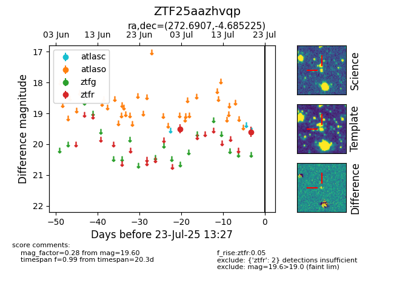

Target ZTF25aazhvqp at 2025-07-23 13:27, see:
FINK: fink-portal.org/ZTF25aazhvqp
Lasair: lasair-ztf.lsst.ac.uk/objects/ZTF25aazhvqp
ALeRCE: alerce.online/object/ZTF25aazhvqp
alt names
ZTF25aazhvqp (ztf,fink)
coordinates:
equatorial (ra, dec) = (272.6907,-4.68522)
galactic (l, b) = (24.0713,+6.85491)
photometry
last ztfr=19.60
2 ztfr detections
